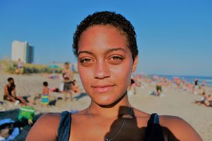

<!DOCTYPE html>
<html>
<head>
	<title>About Me</title>

	<link rel="stylesheet" type="text/css" href="DP.css">
</head>

<head>
		<meta name="viewport" content="width=device-width,
		initial-scale=1, shrink-to-fit=no" />
		<link rel="stylesheet"
		href="https://maxcdn.bootstrapcdn.com/bootstrap/4.0.0-beta/css/boots
		trap.min.css" />
<head/>

<body>


	<!--  -->
<div class="container">
	<div class="row">
		<div class="col">
	    <a href="contact.DP.html"><i class="fas fa-address-book" style="font-size:48px;color:white"></i></a>
	    </div>
	</div>
 </div>

 <div class="container">	
	<div class="row">
		<div class="col">
			<a href="index.DP.html"><i class="fa fa-home" style="font-size:48px;color:white"></i></a>
		</div>
	</div>
 </div>

 <div class="container">
	<div class="row">
		<div class="col">
			<a href="about.DP.html"><i class="fa fa-child" style="font-size:48px;color:white"></i></a>
		</div>
	</div>
</div>


		
</div>
</body>
	</html>
</head>
<link rel="index.DP.html" type="text/css" href="DP.css">
</head>

<head>
<title>About Me</title>
 <body>
<div class="box">

</div>
 </body>


<p>
	
	<center><font size="7">My Name is Jasmine Byrd</font></center>
</p>

<body> 
	 
	 <font size="5">I was born and raised in Tulsa, Oklahoma, where I spent most of my childhood raising my 8 younger brothers and tending to my mother who suffered from addiction. I moved to New York on my own, recently finished my high school equivalency diploma, and am enrolled in the Bridge-to-Tech course to explore a career in technology. My desire to create and my communication skills can be seen in my current roles as an intern for Pathways to Graduation program and an Executive Assistant for GreenFeen- a sustainability-focused environmental justice  consulting firm.</font>
<body/>

</head>
<html {
    background: url(yoma.jpeg) no-repeat center fixed; 
    background-size: cover;
}


